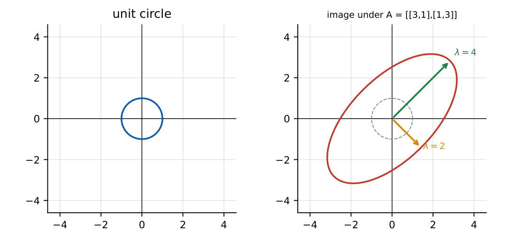

Linear Algebra
In this chapter
Eigenvalue identities (sum \(=\) trace, product \(=\) determinant), rank and consistency of linear systems, Cayley–Hamilton, properties of special matrices and basis/independence questions. Almost every question is solvable without full computation.
1.1 Matrices and determinants
\(\det(AB)=\det A\det B\), \(\det A^T=\det A\), \(\det(kA)=k^n\det A\) for \(n\times n\) \(A\). Swapping two rows changes the sign; adding a multiple of one row to another leaves \(\det\) unchanged. A triangular matrix has \(\det=\) product of diagonal entries. \(\det A=0\iff A\) is singular. \(A^{-1}=\operatorname{adj}A/\det A\), and \(\det(\operatorname{adj}A)=(\det A)^{n-1}\).
For \(2\times2\): \(\det\begin{bmatrix}a&b\\c&d\end{bmatrix}=ad-bc\) and the inverse is \(\frac1{ad-bc}\begin{bmatrix}d&-b\\-c&a\end{bmatrix}\). Cofactor expansion: \(\det A=\sum_j a_{ij}C_{ij}\), \(C_{ij}=(-1)^{i+j}M_{ij}\).
1.2 Matrix operations
\((AB)^T=B^TA^T\), \((AB)^{-1}=B^{-1}A^{-1}\), \(\tr(AB)=\tr(BA)\). Multiplication is associative and distributive but not commutative. An \(m\times n\) times \(n\times p\) product is \(m\times p\) and costs \(mnp\) multiplications. \(A^2=A\) (idempotent), \(A^2=I\) (involutory) and \(A^k=0\) (nilpotent) are common special cases.
1.3 Rank
The rank is the number of linearly independent rows (equivalently columns) \(=\) the number of non-zero rows in echelon form \(=\) the order of the largest non-vanishing minor. \(\rank A\le\min(m,n)\), \(\rank(AB)\le\min(\rank A,\rank B)\) and \(\rank A=\rank A^T\).
1.4 Systems of linear equations and existence/uniqueness
Consistent \(\iff\rank A=\rank[A\,|\,b]\). Then: \(r=n\Rightarrow\) unique solution; \(r<n\Rightarrow\) infinitely many solutions with \(n-r\) free parameters. If \(\rank A<\rank[A|b]\) there is no solution.
Homogeneous \(Ax=0\) is always consistent. Non-trivial solutions exist \(\iff r<n\) (for square \(A\): \(\det A=0\)). The solution space has dimension \(n-r\) (nullity), and rank–nullity gives \(r+\text{nullity}=n\).
Cramer’s rule (square, \(\det A\ne0\)): \(x_i=\det A_i/\det A\) with column \(i\) replaced by \(b\).
1.5 Eigenvalues and eigenvectors
\(Ax=\lambda x\) with \(x\ne0\) gives the characteristic equation \(\det(A-\lambda I)=0\). For \(2\times2\): \(\lambda^2-(\tr A)\lambda+\det A=0\).
\(\sum\lambda_i=\tr A\), \(\prod\lambda_i=\det A\). Eigenvalues of \(A^k\), \(A^{-1}\), \(A+cI\), \(cA\) are \(\lambda^k\), \(1/\lambda\), \(\lambda+c\), \(c\lambda\) with the same eigenvectors. \(A\) and \(A^T\) share eigenvalues. Triangular matrix: eigenvalues are the diagonal entries. \(A\) is singular \(\iff0\) is an eigenvalue.
Cayley–Hamilton: \(A\) satisfies its own characteristic equation, \(p(A)=0\). This gives \(A^{-1}\) and high powers of \(A\) as polynomials of lower degree.

\(A=\begin{bmatrix}2&1\\1&2\end{bmatrix}\): \(\lambda^2-4\lambda+3=0\Rightarrow\lambda=1,3\). Eigenvectors: \(\lambda=1\to(1,-1)^T\), \(\lambda=3\to(1,1)^T\). By Cayley–Hamilton \(A^2=4A-3I\), so \(A^{-1}=\frac13(4I-A)=\frac13\begin{bmatrix}2&-1\\-1&2\end{bmatrix}\).
1.6 Diagonalization
\(A\) (\(n\times n\)) is diagonalizable \(\iff\) it has \(n\) linearly independent eigenvectors. Distinct eigenvalues guarantee this; repeated eigenvalues need geometric multiplicity \(=\) algebraic multiplicity. Then \(A=PDP^{-1}\), \(A^k=PD^kP^{-1}\).
1.7 Special matrices
| Matrix | Definition | Eigenvalues |
|---|---|---|
| Symmetric | \(A=A^T\) | real; orthogonal eigenvectors |
| Skew-symmetric | \(A=-A^T\) | zero or purely imaginary |
| Orthogonal | \(A^TA=I\) | \(|\lambda|=1\), \(\det=\pm1\) |
| Hermitian | \(A=A^H\) | real |
| Unitary | \(A^HA=I\) | \(|\lambda|=1\) |
| Idempotent | \(A^2=A\) | \(0\) or \(1\) |
| Nilpotent | \(A^k=0\) | all \(0\) |
| Positive definite | \(x^TAx>0\) | all \(>0\) |
1.8 Vector spaces, basis, independence
Vectors \(v_1,\dots,v_k\) are linearly independent if \(\sum c_iv_i=0\) forces all \(c_i=0\). A basis is a linearly independent spanning set; the number of elements is the dimension. \(k\) vectors in \(\R^n\) with \(k>n\) are always dependent; \(n\) vectors in \(\R^n\) are independent iff the determinant of the matrix they form is non-zero. Subspace test: closed under addition and scalar multiplication, contains \(0\).
(i) \(\det(A+B)\ne\det A+\det B\). (ii) Repeated eigenvalues do not by themselves mean non-diagonalizable (the identity has \(\lambda=1\) twice). (iii) Eigenvectors of a non-symmetric matrix need not be orthogonal. (iv) A set containing the zero vector is dependent. (v) \(\rank[A|b]\ge\rank A\) always, but equal rank alone does not mean unique.
Use trace and determinant first: for a \(2\times2\) matrix they fix both eigenvalues. For \(\det(kA)\) remember \(k^n\). For “eigenvalues of a polynomial in \(A\)” apply the polynomial to each \(\lambda\). A set of vectors that is dependent shows up as a zero determinant or a zero row after elimination.
1.9 GATE problems
Q1. A \(3\times3\) matrix has eigenvalues \(2,3,5\). Then \(\det A\) and \(\tr A\) are (A) \(30,10\) (B) \(10,30\) (C) \(30,30\) (D) \(10,10\).
Q2. The rank of \(\begin{bmatrix}1&2&3\\2&4&6\\3&6&9\end{bmatrix}\) is (A) 0 (B) 1 (C) 2 (D) 3.
Q3. If \(A\) has eigenvalues \(1\) and \(2\), then \(A^2\) has eigenvalues (A) \(1,2\) (B) \(1,4\) (C) \(2,4\) (D) \(1,3\).
Q4. \(Ax=b\) is consistent if and only if (A) \(\det A\ne0\) (B) \(\rank A=\rank[A|b]\) (C) \(b=0\) (D) \(A\) is square.
Answers: Q1 (A). Q2 (B), all rows are multiples of \((1,2,3)\). Q3 (B). Q4 (B).
Q5. For \(A=\begin{bmatrix}2&1\\1&2\end{bmatrix}\) the trace of \(A^{-1}\) is (A) \(4/3\) (B) \(3/4\) (C) \(1\) (D) \(3\).
Q6. For \(A=\begin{bmatrix}1&2\\3&4\end{bmatrix}\), \(\tr(A^2)\) is (A) 25 (B) 29 (C) 27 (D) 30.
Q7. The system \(x+y+z=0\), \(x+2y+3z=0\), \(x+4y+kz=0\) has a non-trivial solution only for \(k=\) (A) 5 (B) 6 (C) 7 (D) 9.
Answers: Q5 (A): eigenvalues of \(A^{-1}\) are \(1,1/3\). Q6 (B): \(A^2=\begin{bmatrix}7&10\\15&22\end{bmatrix}\). Q7 (C): \(\det=k-7=0\).
Q8. \(\det\begin{bmatrix}2&1&0\\0&3&1\\1&0&1\end{bmatrix}=\) .
Q9. The largest eigenvalue of \(\begin{bmatrix}4&1\\2&3\end{bmatrix}\) is .
Q10. A \(4\times5\) matrix has rank 3. The dimension of the solution space of \(Ax=0\) is .
Answers: Q8: \(2(3)-1(0-1)+0=7\). Q9: \(\lambda^2-7\lambda+10=0\Rightarrow5,2\); answer 5. Q10: \(5-3=2\).
Q11. For a real symmetric matrix: (A) eigenvalues are real (B) eigenvectors of distinct eigenvalues are orthogonal (C) eigenvalues are always distinct (D) it is orthogonally diagonalizable.
Answers: Q11: (A), (B), (D).
T1. Eigenvalues of \(A^{-1}\) if \(A\) has \(2,4\)? T2. \(\det(3A)\) for \(2\times2\) with \(\det A=5\)? T3. Condition for a unique solution of \(Ax=b\), \(A\) is \(m\times n\)?
Answers: T1: \(\tfrac12,\tfrac14\). T2: \(9\cdot5=45\). T3: \(\rank A=\rank[A|b]=n\).
- \(\sum\lambda=\tr A\), \(\prod\lambda=\det A\); \(f(A)\) has eigenvalues \(f(\lambda)\).
- Consistent iff \(\rank A=\rank[A|b]\); free parameters \(=n-r\).
- Symmetric: real \(\lambda\), orthogonal eigenvectors; skew: imaginary; orthogonal: \(|\lambda|=1\).
- Cayley–Hamilton gives \(A^{-1}\); diagonalizable iff \(n\) independent eigenvectors.
- \(\det(kA)=k^n\det A\); rank–nullity \(r+\text{nullity}=n\).